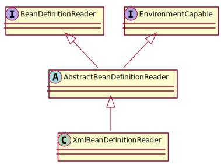
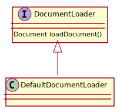
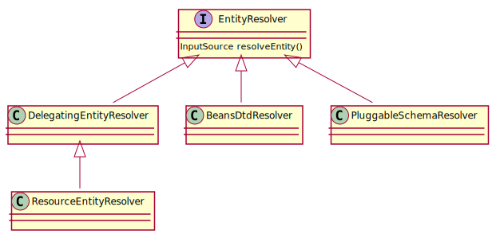
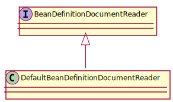

Spring (一) - XML 文件解析与 Bean 的注册
用法
1 2 3
| BeanDefinitionRegistry beanFactory = new DefaultListableBeanFactory(); XmlBeanDefinitionReader reader = new XmlBeanDefinitionReader(beanFactory); reader.loadBeanDefinitions(new ClassPathResource("beans.xml"));
|
DefaultListableBeanFactory 是 Spring 注册及加载 bean 的默认实现
资源管理
通过 Resource 接口来实现对 File、URL、Classpath 等资源的管理，Resource 负责对配置文件进行读取，即将配置文件封装为 Resource，然后交给 XmlBeanDefinitionReader 来处理。

XML 文件解析

XmlBeanDefinitionReader 是 Spring 资源文件读取、解析、注册的实现，重点关注这个类。
1. 使用 org.xml.sax 解析 XML:
1 2 3 4
| InputStream inputStream = encodedResource.getResource().getInputStream(); InputSource inputSource = new InputSource(inputStream); doLoadBeanDefinitions(inputSource, encodedResource.getResource());
|
2. 获取对 XML 文件的验证模式:
1 2
| getValidationModeForResource(resource)
|
常见的 XML 文件验证模式有:
1 2 3 4 5 6 7 8 9 10 11
| public class XmlValidationModeDetector { public static final int VALIDATION_DTD = 2; public static final int VALIDATION_XSD = 3; }
|
3. 加载 XML 并获得对应的 org.w3c.dom.Document:
1
| Document doc = doLoadDocument(inputSource, resource);
|

在 loadDocument 方法中涉及到一个参数 EntityResolver:
1 2 3 4 5 6
| Document loadDocument(InputSource inputSource, EntityResolver entityResolver, ErrorHandler errorHandler, int validationMode, boolean namespaceAware) throws Exception;
|
何为 EntityResolver ? 官方解释: 如果 SAX 应用程序需要实现自定义处理外部实体，则必须实现此接口，并使用setEntityResolver方法向SAX 驱动器注册一个实例。也就是说，对于解析一个 xml，sax 首先会读取该 xml 文档上的声明，根据声明去寻找相应的 DTD 定义，以便对文档的进行验证，默认的寻找规则，(即:通过网络,实现上就是声明 DTD 的地址 URI 地址来下载 DTD 声明)，并进行认证，下载的过程是一个漫长的过程，而且当网络不可用时，这里会报错，就是因为相应的 dtd 没找到。
EntityResolver 的作用是项目本身就可以提供一个如何寻找 DTD 声明的方法，即由程序来实现寻找 DTD 的过程，这样就避免了通过网络来寻找相应的声明。

EntityResolver 接受两个参数:
1
| InputSource resolveEntity (String publicId, String systemId)
|
3.1 XSD 配置文件:
1 2 3 4 5 6 7 8 9
| <?xml version="1.0" encoding="UTF-8"?> <beans xmlns="http://www.springframework.org/schema/beans" xmlns:xsi="http://www.w3.org/2001/XMLSchema-instance" xsi:schemaLocation=" http://www.springframework.org/schema/beans http://www.springframework.org/schema/beans/spring-beans.xsd"> </beans>
|
解析到如下两个参数:
3.2 DTD 配置文件:
1 2 3 4 5 6 7 8
| <?xml version="1.0" encoding="UTF-8"?> <!DOCTYPE beans PUBLIC "-//SPRING//DTD BEAN 2.0//EN" "http://www.springframework.org/dtd/spring-beans-2.0.dtd"> <beans> </beans>
|
解析到如下两个参数:
Spring 使用 DelegatingEntityResolver 来解析 EntityResolver:
1 2 3 4 5 6 7 8 9 10 11 12
| public InputSource resolveEntity(String publicId, String systemId) throws SAXException, IOException { if (systemId != null) { if (systemId.endsWith(DTD_SUFFIX)) { return this.dtdResolver.resolveEntity(publicId, systemId); } else if (systemId.endsWith(XSD_SUFFIX)) { return this.schemaResolver.resolveEntity(publicId, systemId); } } return null; }
|
我们可以看到针对不同的模式，采用了不同的解析器，其中 DTD 采用的是 BeansDtdResolver 来解析的；XSD 采用的是 PluggableSchemaResolver 来解析的。
4. 根据 Document 注册 Bean 信息:
1 2 3
| BeanDefinitionDocumentReader documentReader = createBeanDefinitionDocumentReader(); documentReader.registerBeanDefinitions(doc, createReaderContext(resource));
|

4.1 提取 root:
1 2 3
| Element root = doc.getDocumentElement(); doRegisterBeanDefinitions(root);
|
4.2 解析 profile:
1 2 3 4 5 6 7 8 9 10 11 12 13 14
| protected void doRegisterBeanDefinitions(Element root) { String profileSpec = root.getAttribute(PROFILE_ATTRIBUTE); preProcessXml(root); parseBeanDefinitions(root, this.delegate); postProcessXml(root); this.delegate = parent; }
|
处理 XML 采用了 模板方法模式
4.3 解析并注册 BeanDefinition:
1 2 3 4 5 6 7 8 9 10 11 12 13 14 15 16 17 18 19 20 21
| protected void parseBeanDefinitions(Element root, BeanDefinitionParserDelegate delegate) { if (delegate.isDefaultNamespace(root)) { NodeList nl = root.getChildNodes(); for (int i = 0; i < nl.getLength(); i++) { Node node = nl.item(i); if (node instanceof Element) { Element ele = (Element) node; if (delegate.isDefaultNamespace(ele)) { parseDefaultElement(ele, delegate); } else { delegate.parseCustomElement(ele); } } } } else { delegate.parseCustomElement(root); } }
|
上述代码主要是针对不同的 Bean 命名空间采用不同的解析方式: 默认或者自定义，判别命名空间是根据判断命名空间字符串是否一致来判断的:
1 2 3 4 5
| public static final String BEANS_NAMESPACE_URI = "http://www.springframework.org/schema/beans"; public boolean isDefaultNamespace(String namespaceUri) { return (!StringUtils.hasLength(namespaceUri) || BEANS_NAMESPACE_URI.equals(namespaceUri)); }
|